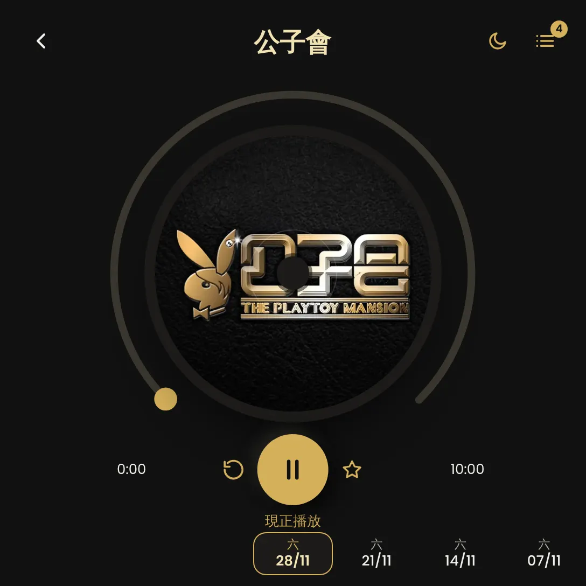

9b HomeView 閒置畫面（ambient）
方形螢幕（544×544）閒置 30 秒自動轉；掂一下返原本畫面。只影響 HomeView，手機、平板、電腦、Duo 全部唔變。下面用公子會做例，時間假設 22:30。
第 3 輪：時間字重比較
Poppins 500 / 600 / 700，其他一樣。揀定之後全部閒置畫面（播緊、暫停、開咗 timer）嘅時間都用同一個字重同字款。
第 2 輪：B 唱片 + 時間（Bold）
已定（2026-11-20）：B 款；時間 Poppins Bold（700）、24 小時；底色跟節目色調（上面一行）；冇播嘢唔轉（N3）；任何頁都轉；第一下掂只叫醒。下面一行一律黑色只作比較，唔採用。
問題 3 圖解：喺節目頁放低部機，會唔會轉？
閒置畫面一定係「30 秒冇掂」先出，同 timer 開唔開無關。問題係：你喺主頁格仔以外嘅頁（節目頁、今日節目、廣播劇頁）放低部機，係咪都轉。

而家（v2.1.0）
冇閒置畫面：放低部機一直顯示主頁格仔或者節目頁。
第 1 輪：三款閒置畫面（播緊）
已定：暫停時顯示暫停咗嗰集。三款都有：時間、日期、節目名、集數日期、播放狀態、進度。
暫停 / 開咗睡眠 timer
暫停：掣變暫停符號，唱片停轉、變暗。開咗 timer：同 9d 一樣，頂邊細條 + 右上月亮同剩餘時間。
冇播嘢（未決定）
一打開 app 未揀節目、或者今日冇嘢聽過。三個做法：
叫醒（建議）
第一下掂只叫醒、唔當撳掣（黑燈瞎火唔會誤撳）；返原本頁之後再閒置 30 秒又轉返閒置畫面。
要你決定
| # | 問題 | 選項 | 我建議 |
|---|---|---|---|
| 1 | 閒置畫面款式 | A 大時鐘 / B 唱片 + 時間 / C 封面做背景 | A：遠睇最清楚，9c 轉暗都最易做 |
| 2 | 冇播嘢時 | N1 淨係時鐘 / N2 時鐘 + 上次聽緊 / N3 唔轉 | N2 |
| 3 | 邊啲頁會轉 | 任何頁 / 只主頁 | 任何頁（選單、休眠選單開緊就唔轉） |
| 4 | 第一下掂 | 只叫醒 / 叫醒兼撳中底下嘅掣 | 只叫醒 |
| 5 | 時鐘格式 | 24 小時（22:30）/ 12 小時（晚上 10:30） | 24 小時 |
| 6 | 底色 | 跟節目色調 / 一律黑色 | 跟節目色調（A / B）；C 本身用封面 |